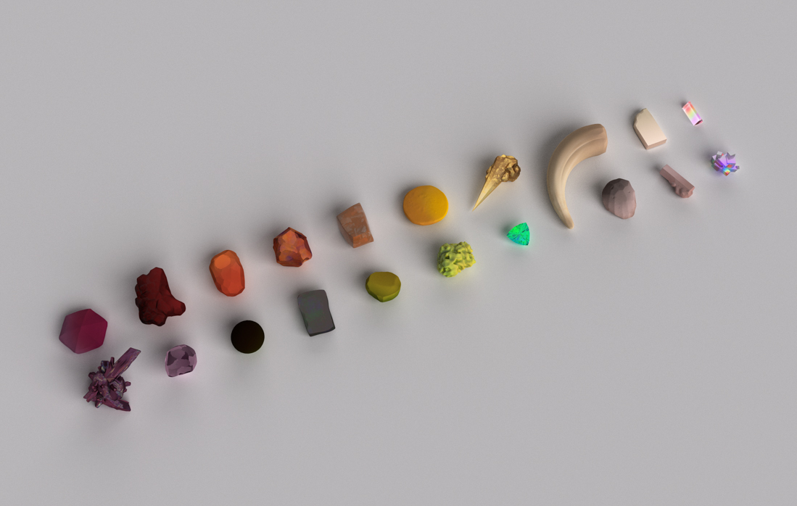
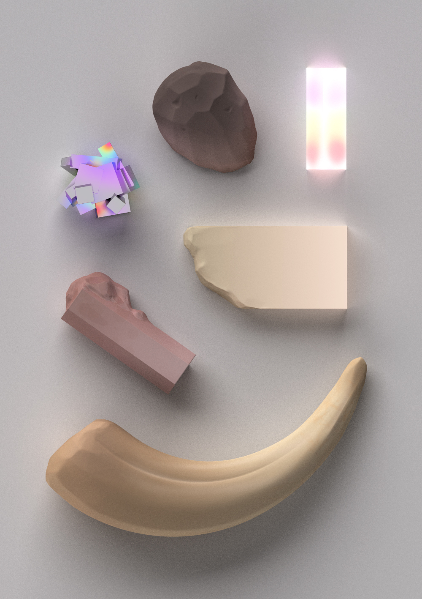
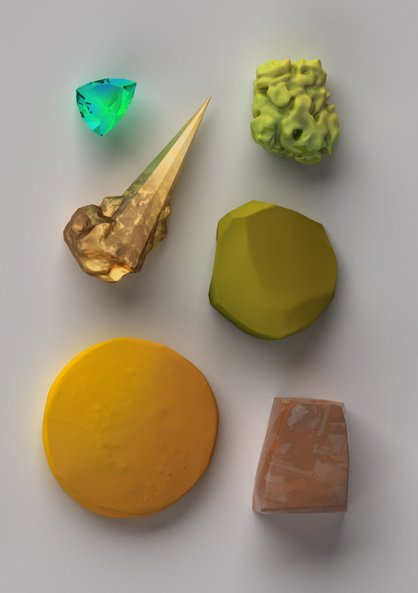
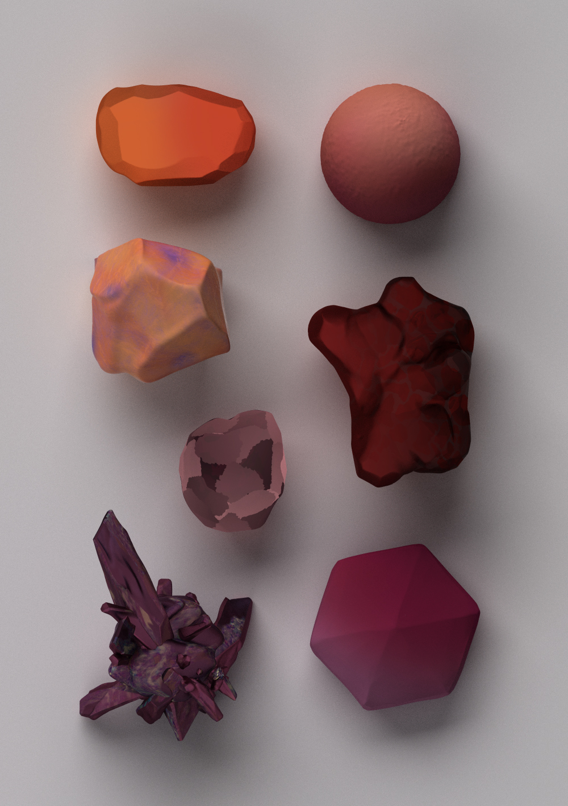
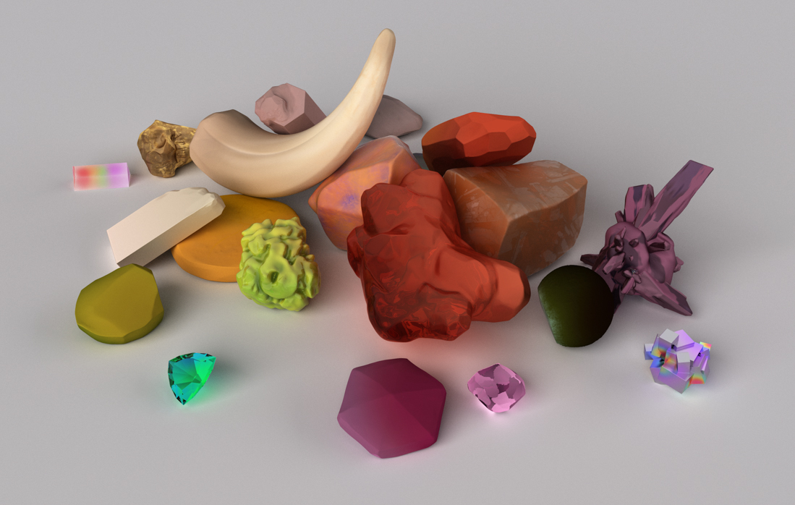
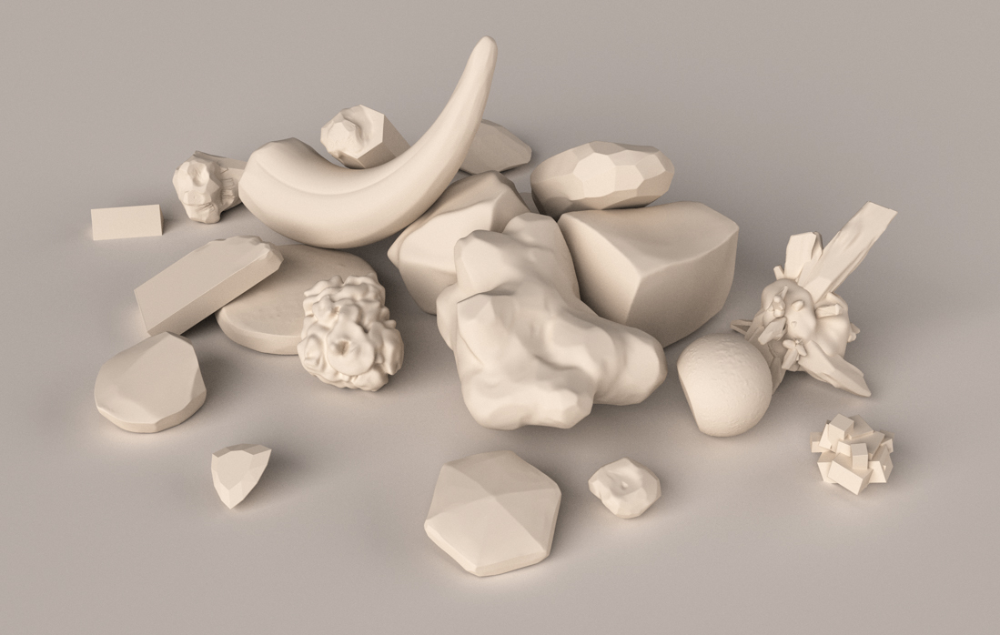

Rendered Artifacts
Series of artifacts investigating collection, composition, and assortment. Arbitrary in isolation, artifacts gain value when contextualized, their uniqueneness making them seemingly precious.
20 3D models, renderings.